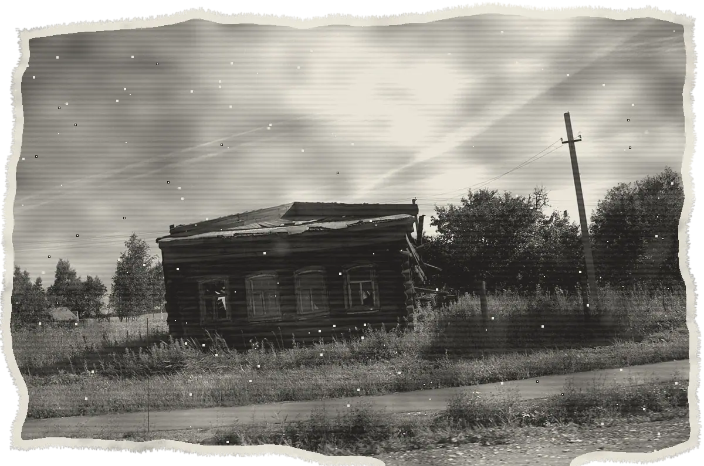

ТОМ IV · ЛИСТ L · 03 / 05
НЕЗАВЕРШЁННЫЙ АРХИВ
Чего нет — и как это нарисовать
Этот лист нарочно почти пуст: атлас смерти, показывающий всё, лгал бы о документе.
1930-е — наши дни · Россия; бывший Советский Союз · Архив, руина и цифровой след

L / 02
Реестр утрат
| Объект | Состояние | Свидетельство |
|---|---|---|
| Могила Казимира Малевича, Немчиновка | утрачена; куб исчез, дуб спилен | московская пресса, 2023 |
| Кладбища при упразднённых монастырях | частично уничтожены в советское время | общая историография; здесь не перечислены |
| Сельские кладбища без реестра | поддерживаются памятью, а не записью | описи не найдено |
| Портреты на надгробиях и эмалевые фотографии | многочисленны, не документированы | наблюдение; источника нет |
| Цифровые страницы памяти | растут; изучены только по аннотациям (см. лист X) | открытый вопрос |
| Имена умерших в чуму 1771 года в Ваганькове | восстановить нельзя | Mos.ru, история Ваганькова |

L / 08
Москва: снесённые кладбища, как их перечисляет газета
| Кладбище | Что, по перечню, произошло | Перенос могил |
|---|---|---|
| Кладбище Симонова монастыря | ликвидировано решением 1930 года; на месте сейчас ЗИЛ-овский дом культуры | большинство умерших не перезахоронено |
| Преображенское | ликвидировано в 1931 году; остались фрагменты и один памятник 1921 года | могилы в основном вывезены за город |
| Лазаревское (Марьина роща) | захоронения прекращены в начале 1930-х; реорганизовано в 1932 году; сейчас детский парк | перенесена лишь малая часть |
| Дорогомиловское | с начала 1940-х родным предлагали перезахоронение; оставшиеся могилы убраны в 1948 году; сейчас офисный центр | сколько перенесено — не сказано |
| Мазиловское | ликвидация решена в 1962 году; сейчас жильё и район станции метро | не сказано |
| Братское (Песчаная) | открыто в 1915 году для погибших в Первой мировой, закрыто для захоронений в 1925 году; с 1932 года парк | не сказано |
Аппарат источники · связанные листы · термины
Источники этого листа
- merridale2000 Merridale, Catherine — Night of Stone: Death and Memory in Russia (2000)
- etkind2013 Etkind, Alexander — Warped Mourning: Stories of the Undead in the Land of the Unburied (2013)
- mk-malevich «Московский комсомолец» — На выставке в Москве показали путь Малевича (2023)
- vagankovo Mos.ru (официальный портал города Москвы) — Материалы по истории Ваганьковского кладбища (б. д.)
- mertsalova2013 Мерцалова, А. — 12 мест в Москве, на которых раньше были кладбища (2013)
Ссылки, даты обращения и ограничения — в списке источников.